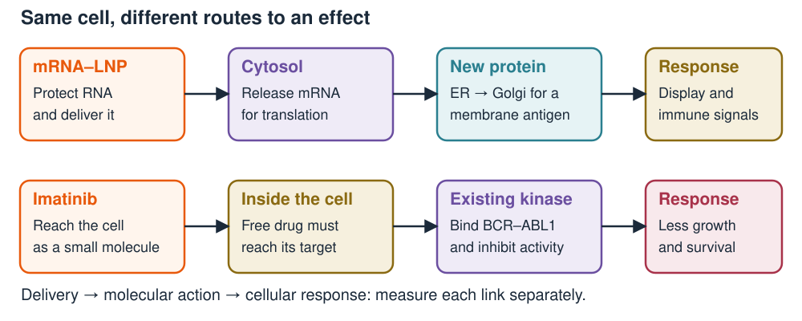
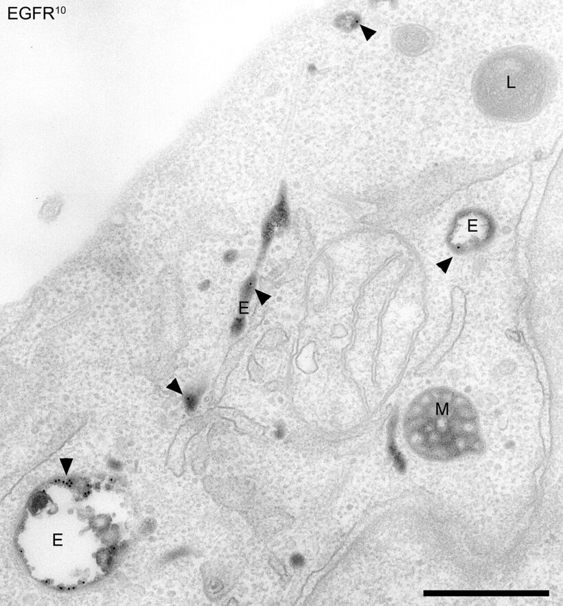
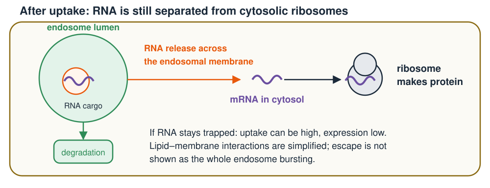
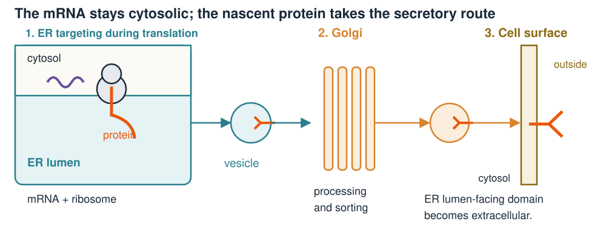
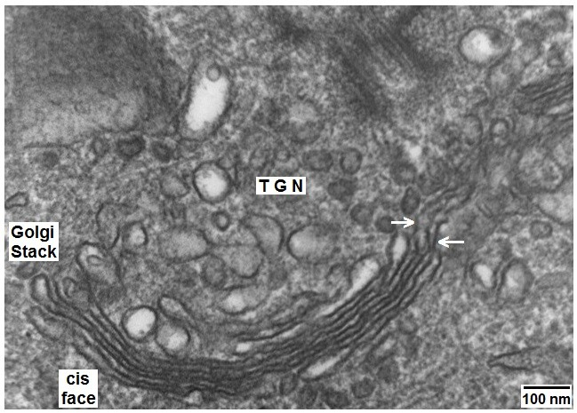
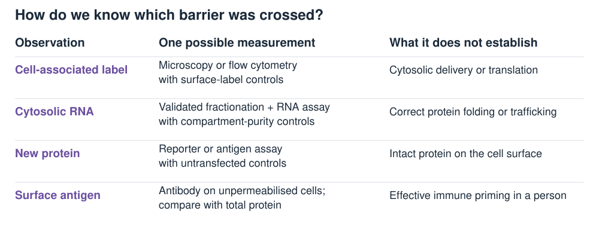
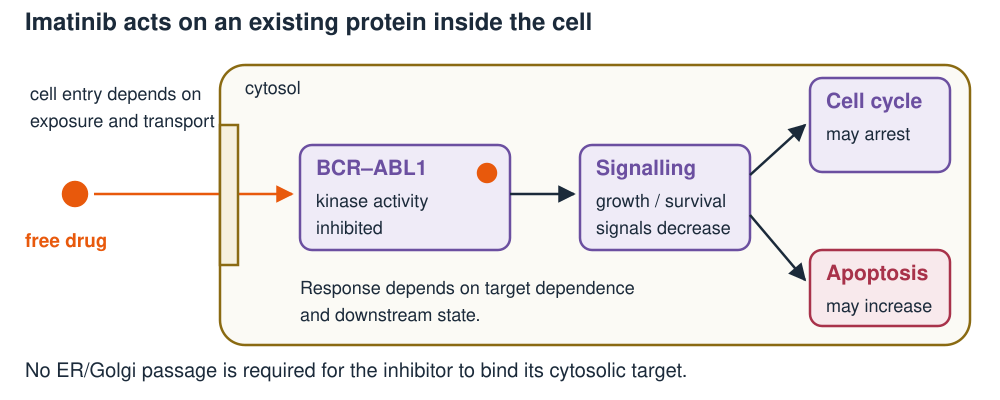
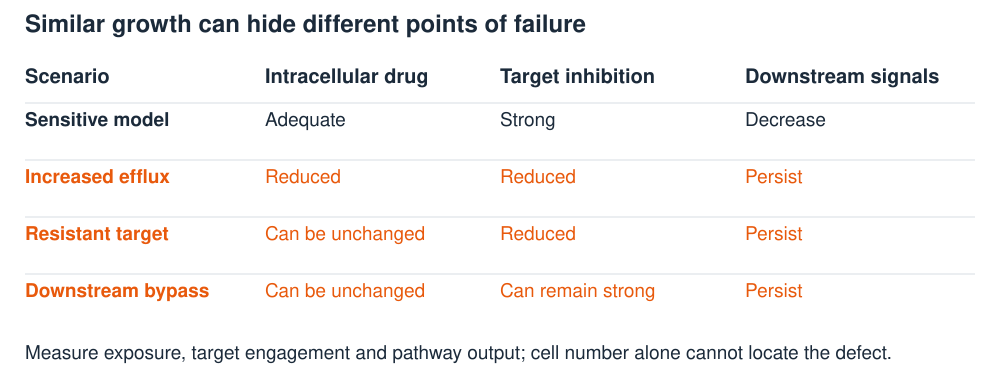
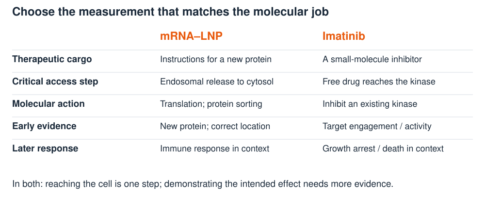

A treatment works only if the right molecule reaches the right place and changes a process the cell depends on.
After this lecture you can:
follow an mRNA–lipid nanoparticle from uptake to protein production and antigen display;
follow imatinib from cellular exposure to kinase inhibition, altered proliferation and possible apoptosis;
connect membranes, organelles, protein sorting, cytoskeleton and signalling along each route;
choose measurements that distinguish delivery, molecular action and cell response, and explain where resistance can arise.
The question: why does “inside the cell” not mean “working”?

A cell contains labelled nanoparticles, but makes almost no encoded protein.
A leukaemia cell contains a kinase inhibitor, but keeps dividing.
Which step failed, and what would you measure next?
Journey 1: uptake puts the cargo in an endosome

Endosomes and a lysosome in a HeLa cell after labelled EGF and transferrin uptake. This is a view of the compartments, not an mRNA-delivery experiment.
A lipid nanoparticle (LNP) protects its RNA cargo and helps it enter cells.
Uptake is commonly endocytic; the route depends on the formulation and cell type.
The endosomal lumen is separated from the cytosol by a membrane.
Some cargo is recycled or degraded. Uptake alone does not establish productive delivery.
Crossing the second barrier: endosomal escape

The mRNA must reach cytosolic ribosomes before it is degraded.
Endosomal acidification changes the charge of ionisable lipids, which can favour interactions with the endosomal membrane.
Escape is a limiting step, not a guaranteed consequence of uptake. The diagram simplifies a formulation-dependent mechanism.
The delivered mRNA is translated in the cytoplasm

Ribosomes read the released mRNA; the mRNA does not need to enter the nucleus.
Translation and folding require energy, amino acids and a functioning cell.
The sequence of the encoded protein determines its next destination.
Our example encodes a membrane antigen with an ER-targeting signal and a membrane anchor.
The protein’s signal sends it to the ER
Translation starts on a cytosolic ribosome. An emerging ER signal recruits SRP and brings the ribosome to the ER translocon.
The antigen’s external domain enters the ER lumen, where it folds and can acquire N-glycans.
Its membrane anchor stays in the bilayer. Quality control retains or degrades proteins that fail to fold.
ER → Golgi → surface preserves topology

A Golgi stack and trans-Golgi network in a human cell, TEM; scale bar 100 nm.
Folded cargo leaves the ER, passes through the Golgi, and reaches the plasma membrane in secretory carriers.
The domain facing the ER lumen eventually faces outside the cell.
The cytosolic tail remains cytosolic; glycans remain on the non-cytosolic side.
The mRNA and its lipid carrier do not have to follow the antigen through this route.
The route depends on motors and homeostasis
Microtubules and motors help position organelles and move many carriers; actin supports local membrane traffic.
ATP supports transport and folding; ATP-driven pumps maintain compartment pH and Ca²⁺.
A traffic defect can lower surface antigen while leaving RNA delivery and early translation intact.
Predict the first affected step, then follow its consequences.
How do we know? Separate uptake, escape and expression

Labelled particle or RNA + microscopy: where is the label? Check endosomal colocalisation.
A validated cytosolic-access assay: did cargo reach the cytosol? Control for damaged cells and fraction contamination.
Encoded protein + surface staining: was it translated, and did it reach the correct side of the membrane?
Use time courses, matched controls and viable-cell counts. One bright image cannot answer all three questions.
Antigen expression becomes a signal between cells
Whole antigen at the surface can expose structures recognised by antibodies or B cells.
Antigen-derived peptides can be displayed by MHC molecules: peptide displays read by T cells.
A classical MHC-I route uses proteasomal peptides → ER loading → surface display; antigen-presenting cells also use other routes.
Recognition works with costimulation and cytokines. Protein expression alone does not predict an immune response.
Preview of Immunologi: this is a map of cell processes, not a complete account of vaccination.
Journey 2: a small molecule acts on an existing protein

Imatinib must reach an adequate free concentration at its intracellular target.
Cellular exposure reflects entry, binding, sequestration and export; membrane passage is not unlimited.
Imatinib binds the kinase domain of BCR–ABL1, reducing its tyrosine-kinase signalling.
Unlike the mRNA journey, this action does not require making a new therapeutic protein.
Less kinase signalling can alter proliferation and survival
BCR–ABL1 can maintain growth and survival signals without normal external control.
Inhibition can reduce cyclin-dependent cell-cycle progression and produce arrest.
Loss of survival signalling can favour BAX/BAK → cytochrome c → caspases, causing intrinsic apoptosis.
Arrest, apoptosis and durable control are different outcomes. They depend on cell state and alternative pathways.
How do we know? Target action comes before cell response
CML blood smear: granulocytes at different stages of maturation. Morphology alone cannot measure kinase inhibition.
Exposure: measure cellular drug, with appropriate handling controls.
Molecular action: test target engagement or a validated phosphorylation readout, with total-protein controls.
Response: measure DNA synthesis, cell number, apoptosis and viability over time.
A phosphorylation change is evidence of pathway inhibition; it is not by itself proof of direct drug binding.
The same failed response can have different causes

Exposure: increased efflux can lower drug available at the target.
Target: a kinase-domain change can reduce inhibitor sensitivity; T315I is an imatinib-resistance example.
Network or fate: alternative signalling or altered death machinery can preserve survival after target inhibition.
Compare drug exposure, target inhibition and response before choosing an explanation.
Why it matters: delivery is part of the treatment
An RNA sequence with the intended function still needs protection, suitable distribution and productive cytosolic delivery.
More uptake is useful only if enough intact cargo reaches a functioning translation system.
Improving one step can change another: compare expression, cell injury and relevant biological effects.
The same platform can encode proteins with different destinations; the protein sequence defines its route.
Why it matters: a disease mechanism becomes a target
In CML, the BCR–ABL1 fusion provides an abnormal kinase signal that can support proliferation and survival.
Imatinib connects a defined molecular abnormality to treatment by inhibiting that kinase.
Response and resistance reveal what the cells depend on, but target inhibition does not guarantee elimination of every malignant cell.
Drug mechanism, clinical benefit and long-term response require different evidence.
Compare the journeys: locate the molecule and the bottleneck

Try it:Drug journey. Choose a route, step through it, then predict the effect of a blocked step before changing the scenario.
Summary
Delivery and topology: entry into an endosome does not establish access to the cytosol; protein targeting determines later membrane crossings.
Cooperation: organelles, motors, energy supply and quality control support expression and trafficking.
Molecular action: an mRNA supplies instructions; imatinib inhibits an existing kinase.
Cell decisions: altered signalling can change proliferation and survival, with outcomes that depend on cell state.
Evidence: distinguish exposure, molecular action and response to locate a failure and explain resistance.
Read more (optional): Alberts et al., Molecular Biology of the Cell, 7th ed., chapters on membranes, intracellular compartments, signalling and cancer.